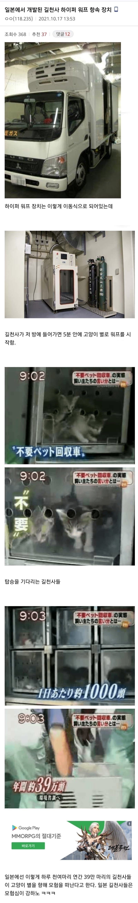

ㄷㄷ...

ㄷㄷ...
국내 도입 시급함.....
농담아니라 수많은 수의사들이 애들 일일히 주사로 안락사 시키느라 ptsd걸리고 있음
차라리 기계적 설비로 안락사 시켜주는게 서로에게 윈윈인거지
추축국 답노 ㅋㅋ
워프항해 동안 부작용이 발생할 수 있음
저렇게 없애도 길냥이 흔하게 돌아댕긴다는거아녀 ㅋㅋ 도입 시급해보이는데
근데 그냥 죽이면 낭비 아냐? 하다못해 화장품 테스트 같은거라도 동물 실험에 못 씀? ㅈ 냥이는 별로 의미 있는 데이터로 못 쓰나??
변인 통제 안된 시험체라 무쓸모
흰 쥐를 쓰는 이유가 있음
랜덤한 스트릿출신 길천사는 실험용으로 사용하기 부적합함
주기가 너무 길고
그렇다고 주기 안긴거 하기에는 등치가 있으니까 즉각적으로 반응 안나오고
비용도 몇배나 비싸고
길악마 라고 하자
길천사 ㅋㅋ 여초 커뮤니티에서 만든 신조어들은 죄다 불쾌감을 내포하고 있음

저거 중국에도 있잖음
인간용 ㅋㅋㅋㅋㅋㅋ
야쿠자용도 있음ㄷㄷ
쉬었음 청년 회수차도 만들자!
오도봉고차로 아쎄이들을 무적 해병으로 !!!
진짜 가슴아프긴해도 필요함
노벨상 30명 배출한 국가 대갓본답네ㄷㄷ 기술력 미쳤음
이마테리움을 건너는곳이군
표현이 웃기네 ㅋㅋㅋㅋ
하이퍼워프 ㅋㅋㅋ
우리나라도 들여오자
캣맘캣대디부터 들어가야함
답은 '있다' 이다.
초코보 무친놈 ㅋㅋㅋㅋㅋ
가스바겐 ㄷㄷㄷㄷㄷㄷㄷ
진지하게 법적으로 고양이들 잡아서 도살해야함
역시 선진국이네
미대출신이 만든건가요?
고양이랑 반달곰 얘들은 빨리 조치 취해야됨 ㅇㅇ
ㅅㅂ 뭔 소린가 했네 ㅋㅋ
길천사 X , 길바퀴 O
길방사능폐기물 O
방송화면 자막은 길고양이가 아니라 집고양이 회수 용도로 쓰이는 것 같은데
왼쪽아래 큰 자막은 위에부터 순서대로 “불(필)요 펫 회수차“, “불(필)요“, “하루 약 1,000마리“, “연간 약 39만마리“
오른쪽 위 화면 자막은 “불요펫 회수차의 실태, 주인의 변명은…“
또 능지 하락 좆대로해석 시작한다
왜 내용이랑 다르지
저런게 있구나
아쉽네 13년도까지 나라현에서 쓰던거같은데 13년도에 처분검토라 뉴스있네
좋은건 본받아야지 ㅇㅇ
'이세계 트럭'
그냥 분쇄기 하나면 끝인데
깔끔하자나
그게 더 비효율임
걍 저렇게 가스나 약품같은거 분사해서 죽이고 시체만 갖다버리면 깔끔하지
분쇄하면 분쇄한 기계 관리도 문제고 잔인하다고 또 역공쳐맞음
단점 : 육신은 높은 확률로 워프 안됨
ㅋㅋㅋㅋㅋㅋ워프 ㅇㅈㄹ
워프 안에서 이를 갈겠군
사스가 추축국
사이즈 좀 큰건없나요?